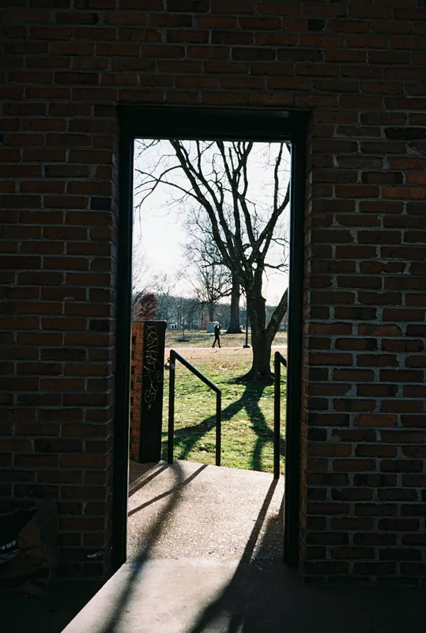
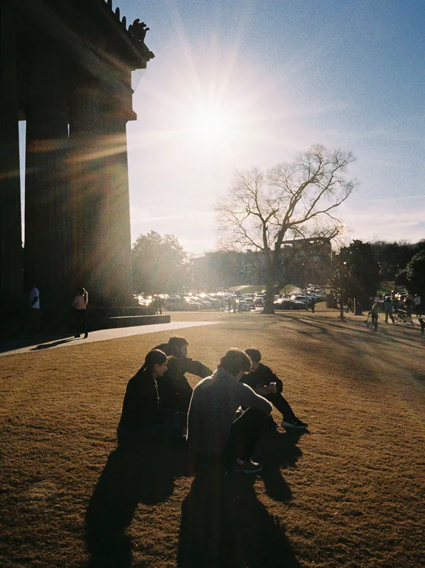
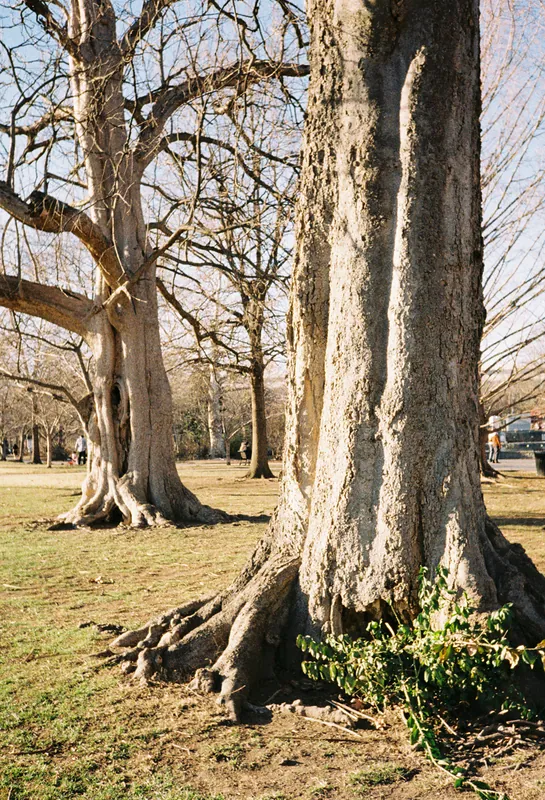
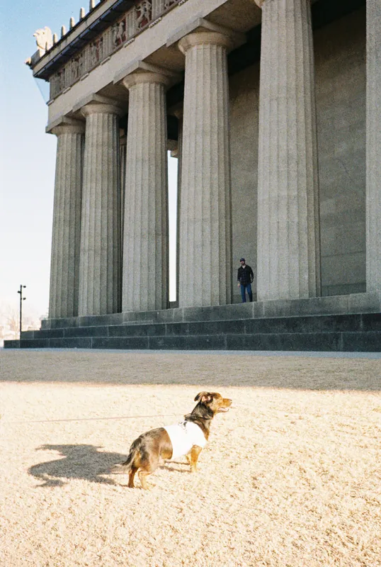
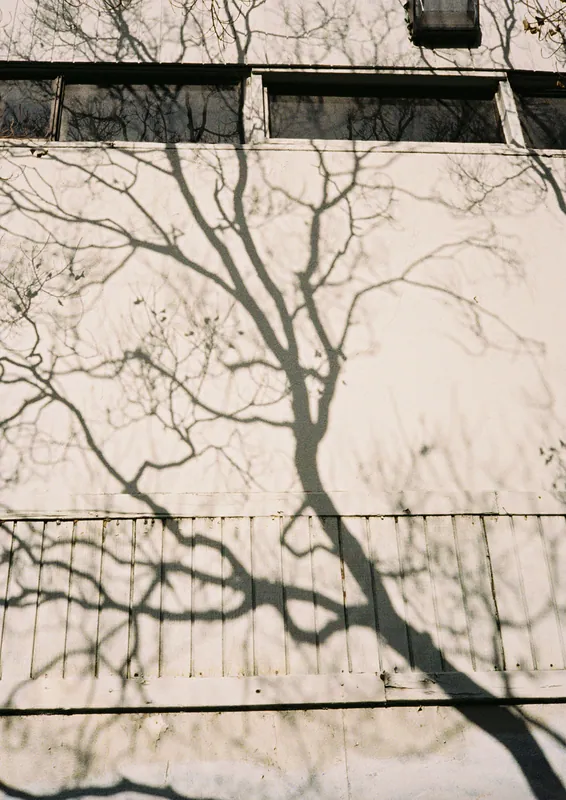
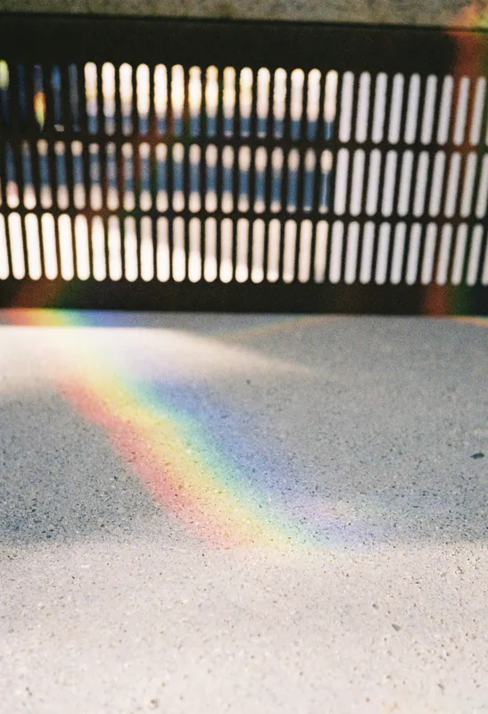
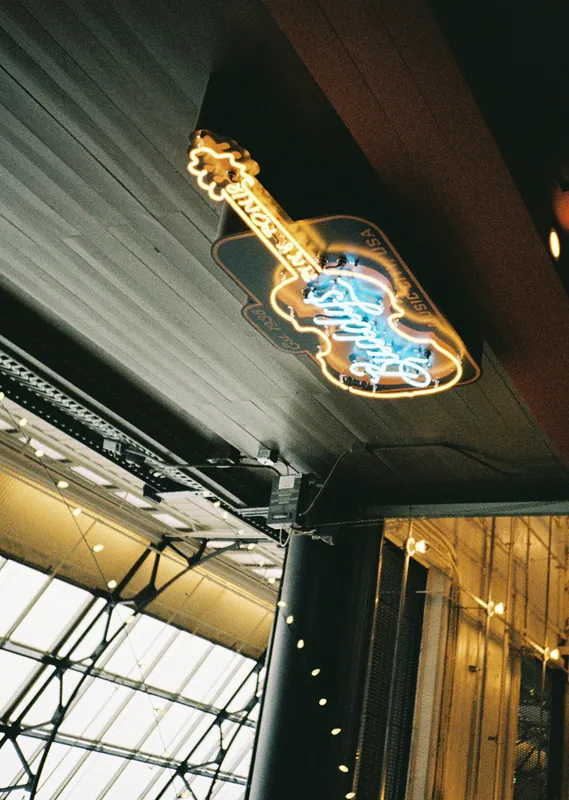
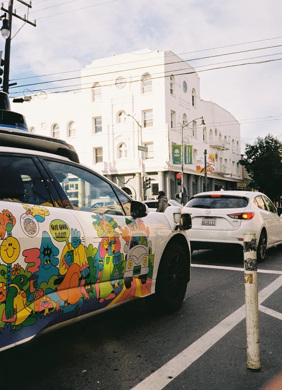

02
Roll 677Nashville, in Winter · 冬天的纳什维尔
A
B
C
D
E
色彩分析COLOR
上：色相 × 饱和度，往外越浓下：红绿蓝三通道，左暗右亮
色
Color Analyser色彩分析
这一卷的颜色最集中在 橙（20°–40°），这一段占了全部有色像素的 49%。平均饱和度 0.29，平均明度 0.60。
最浓的一格是 677·05L，饱和度 0.53。在看片台里打开任意一格，点「分析」能看那一格自己的直方图。
移到色轮上看是哪个颜色
冬天的树不遮光，于是影子比树本身更长、更清楚。整卷都是这个调子：砖、石、光秃的枝，和一颗压得很低的太阳。
Parthenon是一比一的复制品。三点以后柱子开始投影，有人坐在台阶上，有人牵着狗从柱廊下穿过——谁也不抬头看那座神庙。仿造的东西待得够久，就成了本地的东西。
入夜换一套颜色：吉他形状的霓虹、彩色玻璃，和地上一道从窗棂漏下来的彩虹。




树把叶子交出去，换回一整个冬天的影子。卷 677




本卷共 52 帧版面选用 11 张，整卷见上方联系表。半格18×24，田纳西。